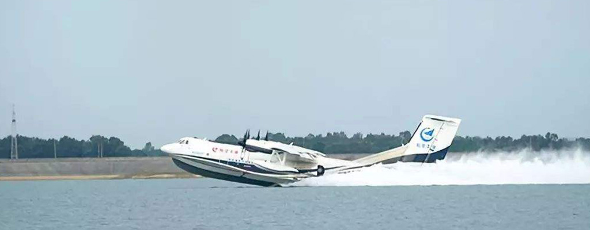
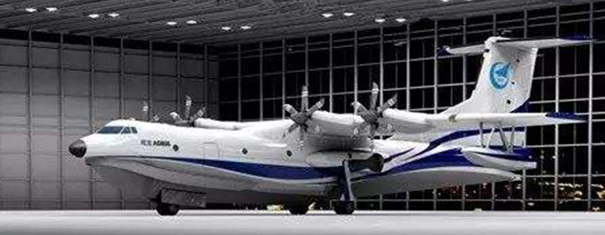
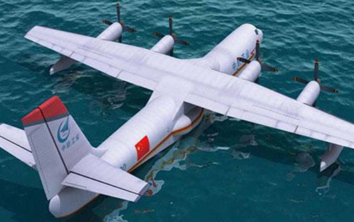
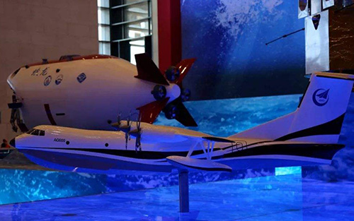
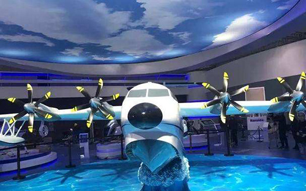

鲲龙-600
发展历程
2018年10月20日9时05分，国产大型水陆两栖飞机“鲲龙”AG600在湖北荆门漳河机场成功实现水上首飞起降。
2018年10月25日，成功完成水上首飞任务的中国首款大型水陆两栖飞机——“鲲龙”AG600从湖北荆门漳河机场顺利返回珠海。
2018年12月20日，“鲲龙”当选为2018年度科技类十大流行语。
2019年3月7日晚，中国航空工业集团有限公司新闻发言人周国强在航空界两会代表委员媒体见面会上表示，为加快“鲲龙”AG600飞机的研制进度，航空工业将陆续投产4架试飞飞机，加快适航取证进度。
“鲲龙-600”意味着什么？
中国大飞机三剑客之一
鲲龙-600 — 展示



